PrismRec：面向微视频推荐的频谱因子分解与偏好流匹配
《Preference Flow Matching with Spectral Factorization for Micro-video Recommendation》由 Xinxin Dong、Haokai Ma、Fei Hu、YuZe Zheng、Bin Wu、Yonghui Yang 和 Xiaodong Wang 完成，一作主机构是国防科技大学并行与分布式计算全国重点实验室、计算机学院，合作机构包括新加坡国立大学和郑州大学。论文于 2026 年 8 月 27 日提交至 arXiv，入口为 arXiv:2608.26579。本轮未核验到独立官方 PrismRec 代码仓库，因此文中涉及复现难度和实现细节的判断均以论文公开描述为边界。
现有微视频推荐往往把整段帧序列压成一个整体向量，稳定视觉语义与快速时序变化因此被纠缠；同时，已有流匹配推荐主要依赖粗粒度行为上下文，视频内部的时间结构并未真正进入偏好生成轨迹。
1. 背景和问题
1.1 现有两条路线为何各缺一块
微视频推荐和普通序列推荐的差别，不只是物品换成了视频。一个短视频内部同时存在较稳定的对象、场景和风格，也存在镜头切换、动作节奏与事件演化；用户点击同一主题的两个视频，可能是被相似画面吸引，也可能是被截然不同的动态节奏吸引。如果只把若干帧经视觉编码器压缩成一个视频级向量，后续模型看到的是混合后的结果，无法再判断某次偏好究竟来自“内容是什么”还是“内容怎样变化”。论文把前者称为静态语义，把后者称为动态因素。这种区分不是为了得到更漂亮的表征，而是要让两类信号在下一视频预测中承担不同作用。
既有工作大致沿两条线发展。交互中心路线使用用户—视频图或按时间排列的行为序列，从点击共现与先后关系中学习协同规律；这条线擅长回答“相似用户接下来会看什么”，但不直接解释视频内容如何推动偏好形成。内容中心路线引入图像、文本、多模态融合或片段级兴趣，对冷门物品和细粒度内容更友好；然而不少方法最终仍把内容压回统一的物品表示，稳定外观与时序变化的边界再次消失。扩散或流匹配推荐进一步把下一物品表示看成从噪声逐步生成的目标，但条件通常仍是单个历史状态，视频内容只是旁路特征，没有成为运输轨迹每一步的结构化条件。
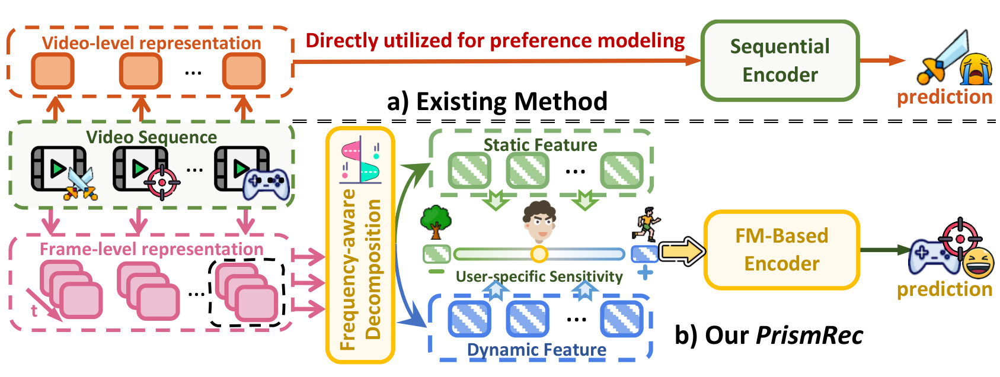
Figure 1 的上半部分是论文对现有方法的抽象：视频序列先变成视频级表示，再由顺序编码器直接预测；即使模型具有强大的序列编码能力，进入它的内容已经是一次性压缩后的结果。下半部分则从每个视频的帧级表示出发，经频率感知分解得到静态与动态特征，再按用户敏感度加权，并把结果送入基于流匹配的编码器。图中真正关键的并非多了两个特征框，而是信息路径发生改变：静态与动态信号在进入偏好生成前保持可辨识，用户门控决定二者的相对影响，预测轨迹因而可以针对当前用户调整方向。需要注意，这张图是动机示意，并没有证明频率带天然等于语义；这种对应仍需后续掩码学习和实验共同支撑。
PrismRec 要回答的核心问题由此变得具体：能否在帧时间轴的频域中形成互补而非重复的内容因子，再让这些因子持续参与从先验噪声到下一物品表示的偏好运输？如果只完成第一步，静态/动态向量仍可能被粗糙融合；如果只完成第二步，流模型仍旧只有行为条件。论文因此将 Spectral Semantic Factorization（SSF）与 Context-Calibrated Preference Matching（CPM）配对设计，前者负责“把内容拆开”，后者负责“让拆开的内容进入用户级生成过程”。
1.2 为什么需要频谱分解与用户校准
作者先在 MicroLens-Small 上做经验分析，而不是直接假设低频必然静态、高频必然动态。对视频 (i) 的帧表征沿时间轴做实数快速傅里叶变换后，以高频集合 (\mathcal H) 的能量占总频谱能量的比例衡量动态倾向。该比例高，表示相邻帧之间包含更多快速变化；比例低，则表明时间上更平稳。这个指标仍是统计代理：镜头抖动、字幕闪烁也会增加高频能量，它不自动等价于有意义的动作语义。但它足以检查不同视频是否真的具有不同时间结构，以及用户历史是否呈现稳定差异。
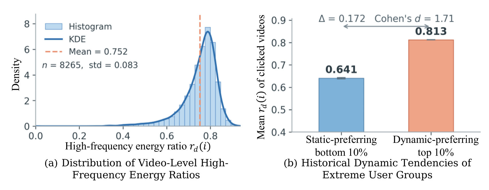
Figure 2(a) 显示 8,265 个视频的高频能量比例并非集中在单一点，均值为 0.752、标准差为 0.083，分布在高值附近有明显密度峰，同时保留较长的低值尾部。这意味着用固定比例或单一整体池化处理所有视频，很可能忽略视频间的时间结构差异。Figure 2(b) 再把用户按其点击视频的平均动态比例分组：静态偏好底部 10% 的均值为 0.641，动态偏好顶部 10% 为 0.813，差值 0.172，Cohen's (d=1.71)。这组结果支撑“用户对静态与动态内容敏感度不同”的建模前提，但它仍来自单一数据集、极端分组和离线历史，不能直接推出每个用户都拥有稳定不变的动态偏好。
这项工作值得看的地方，在于它没有把频域模块当成另一个通用滤波器，也没有把流匹配当成只需替换骨干的生成组件。SSF 的输出不是一个重新混合的频域向量，而是一条以全局视觉语义为主、由低频纠偏的静态轨，以及一条独立承载高频变化的动态轨；CPM 再利用行为状态产生用户门控，并在运输过程中同时接入视频双因子、文本和时间间隔。对推荐系统而言，这相当于把内容表征从“物品侧附加特征”提升为“下一偏好如何形成”的条件变量；对生成式推荐而言，它提示条件设计的粒度可能比选择扩散还是流匹配更重要。
2. 方法
2.1 从条件流匹配到微视频偏好运输
PrismRec 先复用条件流匹配的基本构造。设 (x_0\sim p_0) 是简单先验中的噪声，(x_1\sim p_1) 是目标下一视频的嵌入；在 (t\in[0,1]) 上用 (x_t=\alpha_t x_1+\sigma_t x_0) 连接两端，其中 (\alpha_0=0,\sigma_0=1,\alpha_1=1,\sigma_1=0)。论文 Eq.1 对路径求导得到解析条件速度，Eq.2 用平方误差训练神经向量场逼近该速度，Eq.3 则在推理时从 (x_{t=0}\sim p_0) 沿神经 ODE 积分到 (t=1)。这三式属于标准 CFM 背景：它们把生成训练改写成监督回归，却尚未接入用户、视频或文本条件；实际时延仍取决于求解步数与每步网络开销。PrismRec 特有的第一项可核验量，是引入 SSF 前用来检查频谱假设的动态能量比 Eq.4：
符号解释：(X_i(k)) 是视频 (i) 的第 (k) 个时间频率分量，(\mathcal H) 是预设高频集合，分子为高频能量、分母为总能量。该值只用于经验观察，不是训练标签；它把“动态性”近似为时间变化率，因此会同时响应真实动作和非语义噪声，后续需要可学习掩码修正固定频带先验。
2.2 SSF：先验引导的频谱分解与非对称双轨融合
SSF 的输入是视频 (i) 的 (K) 帧视觉表征 (F_i\in\mathbb R^{K\times d})。模型沿时间维执行正交化 rFFT，取幅度谱 (Z_i=|\operatorname{rFFT}_t(F_i)|)。与硬切低频/高频不同，它把预设先验 (P) 和依赖当前视频频谱的残差网络 (G(Z_i)) 相加，形成互补软掩码，论文 Eq.5 为：
符号解释：(M_i^s) 与 (M_i^d) 分别是静态、动态分支的软权重，(\sigma) 将数值压到 0 至 1，(\eta) 控制视频特定修正相对先验的幅度。二者相加为 1，使同一频率能量在两个分支之间互补分配，避免两个自由掩码同时放大或丢弃某个频带。关键机制是“先验初始化、样本自适应、分支互补”三者同时存在：固定低/高通提供归纳偏置，(G) 允许具体视频偏离先验，互补约束则限定分解空间。其边界也很明确：互补不等于语义可辨识，若训练信号偏向热门视频，掩码仍可能学到平台或编码器噪声。
分解后的 (H_i^s=M_i^s\odot Z_i)、(H_i^d=M_i^d\odot Z_i) 先经过分支专属残差门。对 (b\in{s,d})，模型用频率平均后的通道摘要产生 (a_i^b=\tanh(\psi_b(\operatorname{Avg}_f(H_i^b))))，再计算 (\bar H_i^b=H_i^b\odot(1+\gamma a_i^b))。这一步不是重新划分频带，而是在已分配的频谱内调整通道响应，并通过残差形式保留原始信号。随后，不同核宽的 depthwise convolution 捕捉邻近频率之间的局部结构，论文 Eq.6 为：
符号解释：(\mathcal Q_b) 是分支 (b) 的卷积核集合，(\operatorname{DWConv}_\kappa^b) 以核宽 (\kappa) 做逐通道邻频建模，Concat 汇集多个尺度，(\operatorname{Proj}_b) 再投影到统一维度。它让静态分支和动态分支分别学习“哪些相邻频率组合有用”，而不是共享一个容易再次混合两类信息的滤波器。频率维平均得到 (h_i^b=\operatorname{Avg}_f(\widetilde H_i^b))，作为视频级分支表征；基于这一结果，最后的融合刻意采用论文 Eq.7 的非对称形式：
符号解释：(g_i) 是视觉编码器给出的全局视频表征，([h_i^s;g_i]) 表示拼接，(\phi_s,\phi_d) 是两条 MLP，(\lambda_s) 是静态残差强度。作者认为 (g_i) 已含大量外观信息，因此静态分支只做残差纠偏；动态分支不借用 (g_i)，保留独立时序轨。该设计减少两路重新塌缩成同一向量的风险，但也把视觉编码器的偏差直接留在静态主干中；若 (g_i) 对某类场景失真，低频残差不一定能完全修正。
2.3 CPM：用户敏感度校准与内容条件偏好流
CPM 首先用顺序编码器得到用户历史状态 (h_u=\operatorname{SeqEnc}(S_u))，并把历史视频的 (r_i^s,r_i^d) 分别平均为 (\bar r_u^s,\bar r_u^d)。它不直接拼接两路内容，而从行为状态生成标量或低维门控，论文 Eq.8 为：
符号解释：(\alpha_u) 表示用户对动态因素的相对敏感度，(c_u^v) 是校准后的视频上下文；当 (\alpha_u) 较小时静态历史占主导，较大时动态历史权重更高。该门控把 Figure 2 的群体差异变成可学习的用户级条件。不过它对整段历史做平均并使用统一权重，可能难以表达“用户在体育内容偏动态、在美食内容偏静态”这类主题依赖或短期切换。
除了视频上下文，模型平均历史视频文本表示得到 (c_u^{\mathrm{txt}})，并把目标交互与历史之间的间隔编码为 (e_u^\Delta=\psi_\Delta(\log(1+\Delta\tau_u/\tau_0)))。令真实下一视频嵌入为 (x_1=e_{i_{L+1}})，先验为 (x_0\sim\mathcal N(0,I))，PrismRec 使用直线路径 (x_t=(1-t)x_0+t x_1)。当前流状态、步嵌入和时间间隔被注入历史偏好，论文 Eq.9 为：
符号解释：(e_t) 是流时间步嵌入，(\xi_t) 对演化状态提供随机调制，(\odot) 为逐元素乘法，(\widetilde h_{u,t}) 是随运输时刻变化的用户状态。这里的连接方式保留 (h_u) 的协同信息，又允许中间状态和时间间隔在每一步改变预测；如果时间戳质量差或历史间隔分布跨平台漂移，(e_u^\Delta) 可能成为不稳定条件。在此状态上，模型联合三类条件直接估计终点，得到论文 Eq.10：
符号解释：(f_\theta) 是上下文校准的预测网络，输入包括轨迹感知行为状态、静态/动态门控后的视觉上下文和文本上下文，输出是下一视频嵌入估计。与基础 CFM 预测速度不同，CPM 采用 (x_1)-parameterization；它让表征回归目标直观，也使每一步方向都可由“预测终点减初始噪声”得到，但预测误差可能在多步更新中累积。
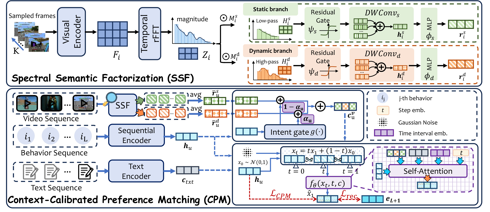
Figure 3 上半区完整展开 SSF：采样帧经视觉编码和时间 rFFT 后，互补掩码把频谱分到绿色静态支路与橙色动态支路；两路分别经过残差门、不同尺度的 DWConv 和 MLP，输出 (r_i^s,r_i^d)。下半区把视频序列的双路表示在历史上平均，行为序列给出 (h_u) 和 intent gate，文本序列给出 (c_u^{\mathrm{txt}})，三者在右侧与高斯噪声、流步嵌入、时间间隔共同进入 Self-Attention 预测器。红色虚线标出 (L_{\mathrm{CPM}}) 与 (L_{\mathrm{rec}}) 的两种监督：前者约束终点表征，后者约束下一物品判别。图中蓝色路径也清楚显示训练与推理都保留行为残差，不是用生成状态完全替代顺序编码器。推理从 (x^{(0)}=x_0) 开始，作者使用 (N) 次 Euler 更新，论文 Eq.11 为：
符号解释：(\widehat x_1^{(n)}) 是第 (n) 步按当前状态重新预测的终点，(1/N) 是固定步长，方向以初始噪声 (x_0) 为参照。实验中 (N=10)。终态 (x_u^{\mathrm{FM}}=x^{(N)}) 再与历史状态融合为 (p_u=\omega x_u^{\mathrm{FM}}+(1-\omega)h_u)。因此，训练会随机抽样流时间并学习终点回归；服务时则需执行十次条件网络更新，再对 (p_u) 做物品打分。效率表说明这一实现比所比模型快，但十步仍是上线容量规划必须实测的成本。
2.4 终点回归与全量物品判别的联合目标
第一项训练目标直接让预测终点靠近真实下一视频嵌入，论文 Eq.12 为：
符号解释：期望覆盖时间、先验噪声与真实目标样本，(\widehat x_1) 是 CPM 输出，(x_1) 是正样本嵌入。该损失在表征空间监督运输方向，使视频内容条件能影响中间轨迹；若物品嵌入本身被流行度或内容编码偏差主导，欧氏距离也会继承这些偏差。仅做表征回归不保证目标在大物品集合中可区分，所以论文 Eq.13 另用标准 full-softmax：对批次 (\mathcal B) 中每个用户，提高真实下一视频 (i_u^+) 的分数相对全物品集合 (\mathcal I) 的归一化概率。它把“到达正确表征附近”转换成“在所有物品中把正例排前”，但十万级物品下的吞吐与分布式实现需要单独核验。两项监督最终合为论文 Eq.14：
符号解释：(\lambda_C) 平衡排序判别与终点回归。Figure 8 表明该权重并非越大越好：过强的表征回归会压过推荐目标，说明“更贴近目标嵌入”与“更适合 Top-K 排序”并不完全等价。PrismRec 的主要失败风险不是两项损失是否存在，而是频谱先验、用户门控和流回归三者可能共同拟合离线日志中的相关性，却未必对应可迁移的真实偏好因果机制。
3. 实验结果
3.1 数据集、协议与实现细节
实验覆盖两个平台的四个真实微视频数据集：MicroLens-Small、MicroLens-Big、Shortvideo-Small 和 Shortvideo-Big。作者采用 4-core 过滤，把每个用户的交互按时间排序，并用最后一次交互测试、倒数第二次验证。评价指标是 Hit Ratio 与 NDCG 在截断 10 和 20 下的结果。这个协议适合下一物品离线比较，但没有模拟候选召回、曝光选择、重复推荐约束或在线反馈闭环；尤其在 Shortvideo 超大物品目录中，具体负样本或全量排序实现会显著影响难度。
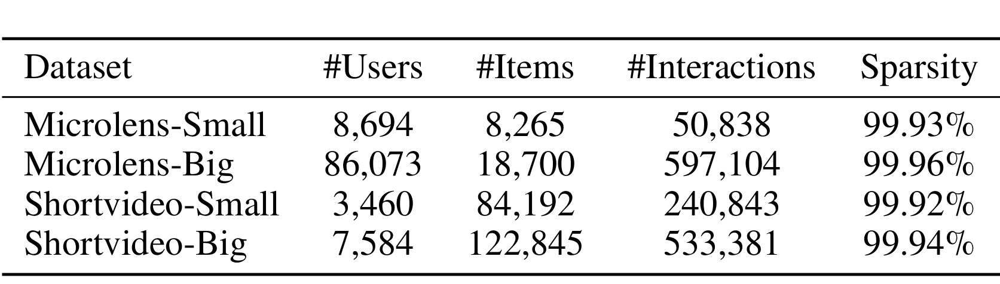
Table 1 显示四个数据集都极度稀疏：MicroLens-Small 有 8,694 名用户、8,265 个物品和 50,838 次交互，稀疏度 99.93%；MicroLens-Big 增至 86,073 名用户、18,700 个物品和 597,104 次交互，稀疏度 99.96%。Shortvideo-Small 只有 3,460 名用户，却有 84,192 个物品和 240,843 次交互；Shortvideo-Big 为 7,584 名用户、122,845 个物品和 533,381 次交互。后两者每个物品平均不到五次交互，物品侧协同信号尤其薄弱，因此更容易观察到内容表征带来的增益；这也意味着跨平台的相对提升不能简单解释成统一机制在任何数据密度下都同样有效。
实现上，作者使用 VideoMAE 从每个视频均匀采样的 10 帧提取视觉特征；MicroLens 文本用 BERT，Shortvideo 文本用 GloVe。默认序列骨干包含两层 Transformer、64 维隐状态、两个注意力头、2048 维前馈层和 0.5 dropout，用户序列截断至 50。训练环境为单张 NVIDIA 4090、Python 3.10.18，Adam 批量 2048、学习率 (10^{-3})。SSF 使用正交 FFT，CPM 采用 10 个采样步，融合权重 (\omega) 与 (\lambda_C) 在 0.1 至 0.5 上用验证集选择。这些细节足以搭建近似版本，但论文未给出全部卷积核集合、门控网络层宽、(\eta,\gamma,\tau_0) 等完整配置，且代码未核验，严格数值复现仍有缺口。
3.2 主结果与增益来自哪里
Table 2 比较十四个基线，覆盖协同过滤 BPR、VBPR、FlowCF，序列方法 SASRec、CL4SRec、SSDRec、DiQDiff、FMRec，多模态序列方法 MoRec、TedRec、IISAN、DMMD4SR，以及视频推荐 MMGCN、IISAN-Versa。这样的分组允许分别判断：提升是否仅来自更强序列骨干、是否仅来自流匹配、是否只因使用多模态内容。作者用 paired t-test 报告 PrismRec 相对基线在表中带星号的改进达到 (p<0.01)，但正文没有给出方差、重复运行次数或置信区间，显著性信息仍不完整。
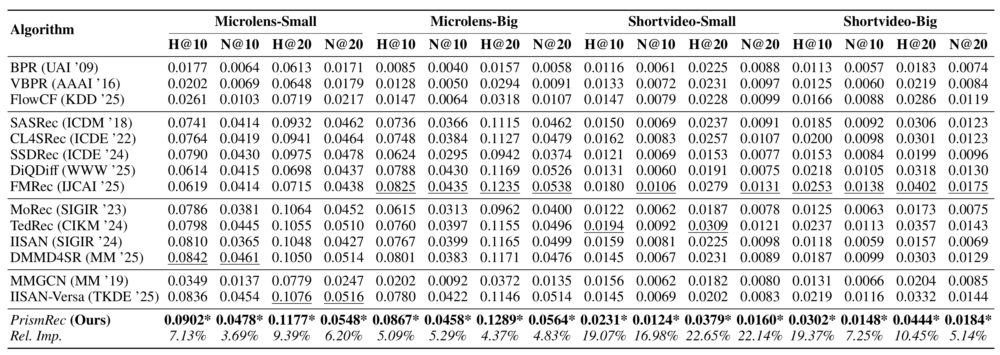
Table 2 中 PrismRec 在四个数据集的 H@10、N@10、H@20、N@20 共十六个格子都取得最佳值。MicroLens-Small 的四项结果为 0.0902、0.0478、0.1177、0.0548，相对最强基线提升 7.13%、3.69%、9.39%、6.20%；MicroLens-Big 为 0.0867、0.0458、0.1289、0.0564，对应 5.09%、5.29%、4.37%、4.83%。Shortvideo-Small 的提升最突出，四项相对增益为 19.07%、16.98%、22.65%、22.14%；Shortvideo-Big 则为 19.37%、7.25%、10.45%、5.14%。摘要所说的 22.65% 因而是 Shortvideo-Small H@20 的最大单项提升，不是平均提升，更不是所有设置的统一增益。
结果结构比“全表第一”更有解释力。FMRec 在十六个格子中的十个成为最强基线，说明流匹配本身确实适合序列偏好表示；PrismRec 继续超过 FMRec，才支持结构化内容条件有额外价值。另一方面，MoRec、IISAN 和 DMMD4SR 在 Shortvideo 上并不总能超过纯序列 FMRec，表明“加入多模态”并不会自动缓解稀疏。PrismRec 在 Shortvideo 的相对优势更大，和其物品目录巨大、交互稀少的设定一致：当 ID/协同表示不可靠时，帧内容分解可提供额外锚点。不过这仍是相关性解释；要断言增益完全来自长尾或冷启动，还需要按物品频次分桶的结果，论文没有给出。
从指标幅度看，Shortvideo 的绝对值仍低。例如 Shortvideo-Small 的 H@10 从最强基线约 0.0194 提升到 0.0231，虽然相对提升 19.07%，绝对差约 0.0037；Shortvideo-Big H@10 从 0.0253 到 0.0302，绝对差约 0.0049。工程评估不能只看相对百分比，需要把这些差值放入真实候选规模、曝光价值、时延预算和 A/B 置信区间中。相反，MicroLens-Small H@20 达到 0.1177，说明内容更充分、物品规模较小的设置下绝对命中仍更高。
3.3 消融、可视化与骨干通用性
作者构造三种消融：PrismRec-CPM 用 MLP 替代上下文校准的偏好运输；PrismRec-SSF 用整体视频表征替代频谱语义分解；PrismRec-SSF-CPM 同时移除二者。这个设计分别测试“把内容拆开”与“让内容指导连续运输”，同时移除则接近没有两项贡献的基线形态。
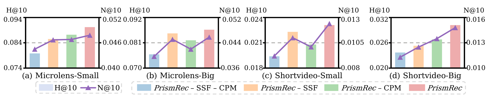
Figure 4 的四个面板均显示完整 PrismRec 的 H@10 柱和 N@10 折线最高，移除 SSF 或 CPM 都会下降，同时移除二者通常更弱。更重要的是，两个模块的贡献在各数据集没有固定排序：某些面板去掉 SSF 的损失更大，另一些面板去掉 CPM 的损失更明显。这与模块职责相符，SSF 修复物品侧内容纠缠，CPM 修复用户侧运输条件，数据的内容质量与行为稀疏度会改变二者权重。四个面板方向一致，降低了结果只由单个平台偶然驱动的可能，也说明完整模型不是由单个数据集上的异常值托起。但图中没有误差条和精确数值表，因此它足以支持“两个模块都有效且互补”，却不足以比较微小消融差异是否统计显著，也不能量化二者之间是否存在超加性协同。
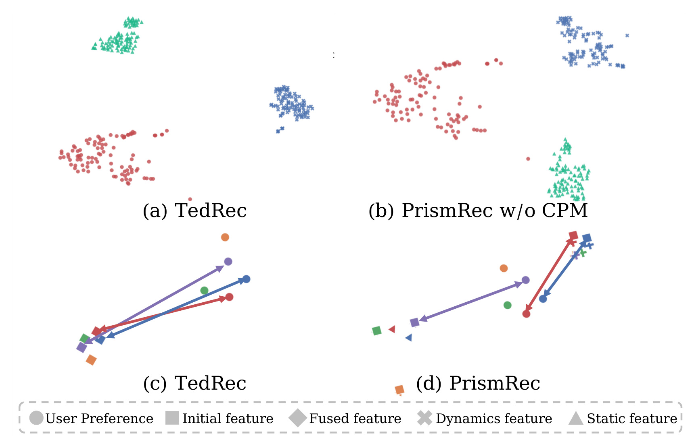
Figure 5 上半部分比较 TedRec 与不含 CPM 的 PrismRec：后者红色动态点和绿色静态点在二维投影中分离更清楚，作者据此认为 SSF 学到了互补因素。下半部分用箭头连接初始、静态、动态、融合表示与用户偏好；完整 PrismRec 中融合端点更靠近对应用户偏好方向，作为 CPM 对齐作用的定性证据。该图能够帮助理解“分离后再校准”的几何直觉，但 t-SNE 会扭曲全局距离，且只展示 MicroLens-Big 的少量样本；它不能替代可辨识性度量、簇间统计或因果消融，也不能证明每个频带具有固定语义。
论文还把 PrismRec 分别接到 SASRec 与 CL4SRec 骨干上。作者报告，只加入 SSF 或 CPM 也能改善平均 H@10 与 N@10，相关平均增益为 16.60% 和 21.01%，而同时加入两者在各设置中最好。这说明模块不完全依赖默认顺序编码器，但公开的 9 页版本只在正文概述，所称附录结果未随该版本出现，无法核对每个骨干、数据集和指标的原始表格。因而“backbone-agnostic”目前应理解为在两个骨干上的初步支持，而非对图模型、长序列模型或工业多任务排序器的普遍保证。
3.4 鲁棒性、帧采样与参数敏感度
鲁棒性实验在 MicroLens-Small 上构造两种扰动：向用户行为序列注入比例最高 0.2 的虚假交互，以及向输入表示加入尺度最高 0.5 的高斯噪声。前者更像日志污染或误触，后者更像视觉/文本编码误差。比较对象是 PrismRec、DMMD4SR 和 IISAN-Versa。
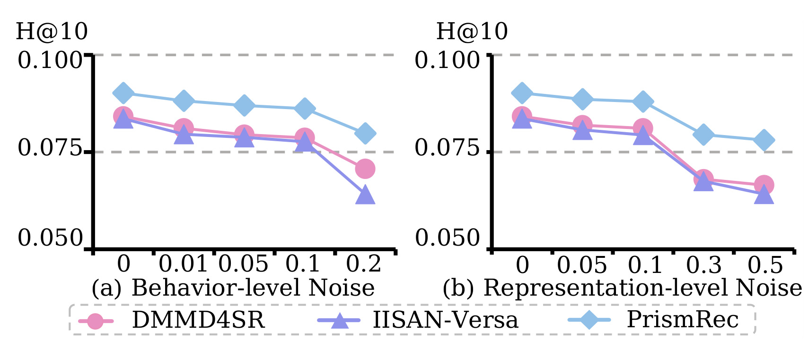
Figure 6 显示 PrismRec 在每个噪声强度上都保持最高 H@10。行为噪声增大时，PrismRec 相对 DMMD4SR 的优势从 7.13% 扩大到 12.87%；作者将其解释为 SSF 的物品侧内容不完全依赖被污染的行为。表示噪声从 0 增至 0.5 时，PrismRec、DMMD4SR、IISAN-Versa 的降幅分别为 13.41%、23.21%、21.02%，表明条件运输可能缓冲单次中间表示扰动。仍需谨慎：所有曲线都会随噪声恶化，实验只覆盖合成随机噪声；现实中的曝光偏差、刷量、内容分布漂移往往有结构性，未必能由同样机制抵消。
帧采样实验同时改变采样位置策略和帧数预算。策略包括 uniform、random、head 与 middle，帧数为 5、10、16；这直接影响 VideoMAE 输入所覆盖的时间范围，也决定离线特征抽取成本。
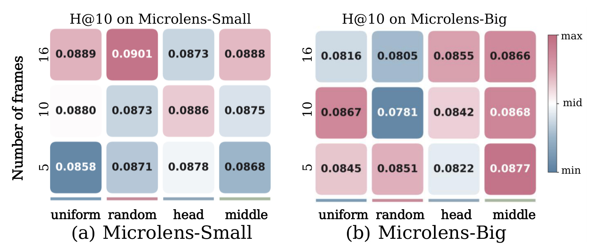
Figure 7 表明最优配置依数据集而变。MicroLens-Small 在 16 帧 random 下达到 0.0901，略高于默认 10 帧下各方案；MicroLens-Big 在 5 帧 middle 下为 0.0877，反而高于多数组合，10 帧 middle 为 0.0868、16 帧 middle 为 0.0866。增加帧数通常提供更多内容证据，却不是单调保证：采样位置是否覆盖关键信息同样重要，冗余或无关帧会稀释频谱。工程上应把帧预算和视频时长、镜头密度联合校准，而不是把“10 帧”视作跨平台常数。
两个权重的敏感度在 MicroLens-Small 的 H@20 上单独观察：(\lambda_C) 控制 CPM 终点回归损失，(\lambda_s) 控制静态残差强度。
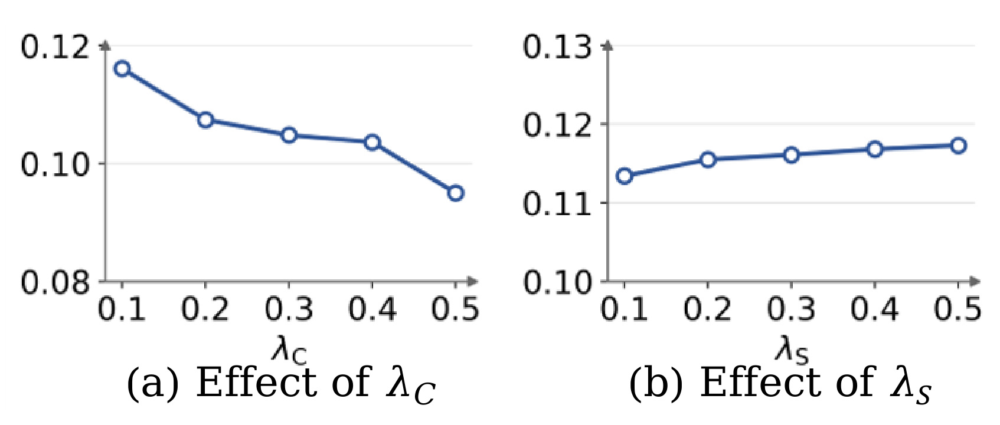
Figure 8(a) 中，(\lambda_C) 从 0.1 增至 0.5 时 H@20 由约 0.116 持续降至约 0.095，说明表征回归过强会损害最终排序；最优点位于所测区间边界 0.1，也提示更小权重仍值得搜索。Figure 8(b) 中，(\lambda_s) 从 0.1 到 0.5 仅带来缓慢上升，约从 0.113 增至 0.117，敏感度较低，两条曲线共同说明排序目标与频谱残差并非同等敏感。论文正文的“Parameter Sensitivity”段误称 Figure 8 检查帧采样策略和预算，而图像与 caption 明确显示 Figure 7 才是帧采样、Figure 8 是两项权重；这是编辑编号错位，笔记按图和 caption 解释，不把错位句当实验事实。
3.5 效率与证据边界
效率比较只在两个 MicroLens 数据集上进行，对比 FMRec、IISAN-Versa 与 PrismRec。表中 #Tra. 是每轮训练时间，#Eval. 是每轮评估时间，#Mem. 是峰值 GPU 显存；准确率用 H@20。由于三者都在论文报告的单张 4090 环境下测量，表内相对比较有参考价值，但不能直接映射到线上吞吐、端到端召回延迟或不同硬件。
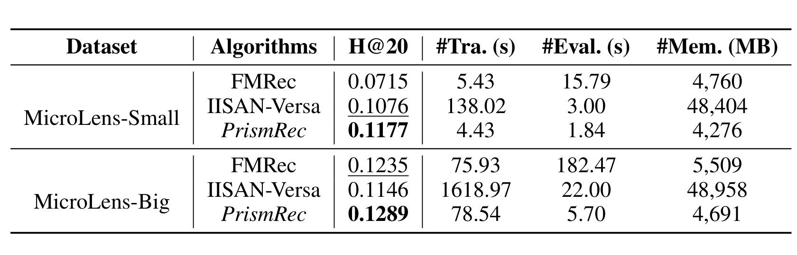
Table 3 中，MicroLens-Small 上 PrismRec 的 H@20 为 0.1177，每轮训练 4.43 秒、评估 1.84 秒、峰值显存 4,276 MB；FMRec 分别为 0.0715、5.43 秒、15.79 秒、4,760 MB，IISAN-Versa 为 0.1076、138.02 秒、3.00 秒、48,404 MB。MicroLens-Big 上 PrismRec 为 0.1289、78.54 秒、5.70 秒、4,691 MB；FMRec 为 0.1235、75.93 秒、182.47 秒、5,509 MB，IISAN-Versa 为 0.1146、1618.97 秒、22.00 秒、48,958 MB。PrismRec 因而在两组中都具有最低评估时间和显存，Small 上训练也最快；Big 上训练比 FMRec 稍慢 2.61 秒，不能概括成所有阶段都最低成本。
效率优势可能来自频域分解主要作用于预提取的少量帧特征、depthwise convolution 较轻，以及 CPM 只使用 10 步；同时，IISAN-Versa 的显存高出一个数量级，使“最低峰值内存”在该比较集内很明确。不过论文没有报告特征预抽取时间、物品库编码成本、候选数量、批次内全量 softmax 实现或服务并发。更重要的是，全部实验是离线下一物品预测，没有在线 A/B、用户停留时长、内容新鲜度、公平性或延迟尾分位。因此可以确认的是：在作者的离线环境和所比方法中，PrismRec 形成了较好的准确率—评估时间—显存组合；不能进一步宣称已经证明工业线上收益。
4. 总结
4.1 我的判断
PrismRec 最有价值的贡献不是简单把 FFT 与 flow matching 拼接，而是建立了清楚的职责分解：SSF 在物品侧保存稳定语义与时序变化的差异，CPM 在用户侧决定两类因素如何影响偏好运输，联合目标再把表征终点和 Top-K 判别连接起来。主结果在四个数据集十六项指标上全胜，Shortvideo 的相对增益尤其明显；消融、噪声、采样和效率证据也覆盖了方法的不同环节。就目前证据而言，它是一项结构完整、工程成本相对克制的多模态序列推荐方案，但“静态/动态语义可辨识”和“内容成为偏好形成内因”仍主要是模型解释，不是严格因果结论。
4.2 工程启发与复现建议
复现应先固定 VideoMAE 帧特征、文本特征和相同的 leave-one-out 划分，重跑 FMRec 与完整 PrismRec，再逐项加入 SSF 和 CPM；否则特征抽取差异会掩盖模块贡献。第二步应记录软掩码在视频类别、时长和码率上的分布，检查所谓高频动态是否被字幕闪烁、转场或压缩噪声主导。第三步应把 (\lambda_C) 搜索范围向 0.1 以下扩展，并同时报告 5、10、20 步的准确率、评估时间和显存，确认十步不是偶然最优。服务化时可离线缓存 (r_i^s,r_i^d)，在线只对用户历史聚合与 CPM 更新，但仍需评估长历史、候选规模和全量 softmax 替代方案。
4.3 局限与后续跟进
主要局限至少有四点。第一，四个数据集来自两个平台且全部是离线日志，缺少在线干预，无法排除曝光机制与流行度对门控的影响。第二，频率带到静态/动态语义的映射是先验引导的软分解，不具有可辨识性保证，高频也可能是噪声。第三，用户敏感度由历史平均和统一门控表示，对主题依赖、会话切换与短期兴趣可能过粗。第四，代码和若干实现超参数未核验，骨干通用性结果在当前 9 页版本中也缺少附表。第五，显著性只给出 (p<0.01)，没有运行方差和置信区间；效率又未计入内容预编码与线上候选阶段。
后续值得跟进三条证据链。其一，等待官方代码或修订版，核对卷积核、门控维度、损失权重和所谓附录的骨干实验，这决定结果能否精确复现。其二，增加按物品频次、视频时长、内容类别与新物品分桶的评测，验证 Shortvideo 增益是否真正来自物品侧内容补偿。其三，用主题条件门控或时间变化门控替代单一 (\alpha_u)，并比较可解释性和线上稳定性。其四，开展结构噪声、分布漂移和在线 A/B 评估，因为随机扰动鲁棒并不等价于真实平台鲁棒。只有这些问题得到回答，PrismRec 才能从一套有说服力的离线框架进一步变成可验证的工业偏好生成方案。